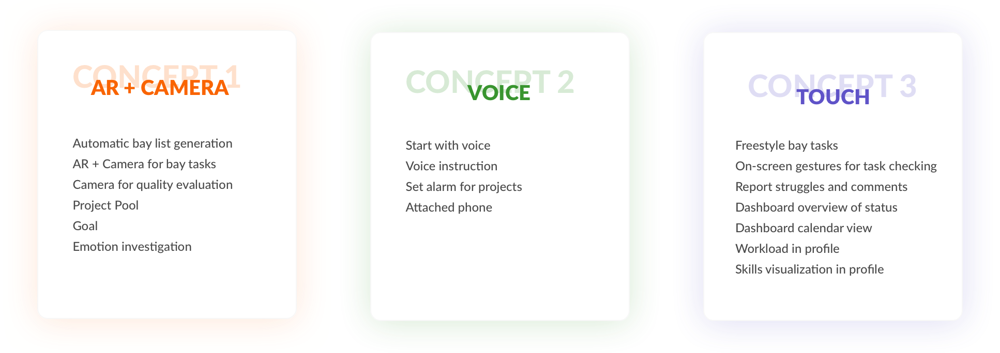
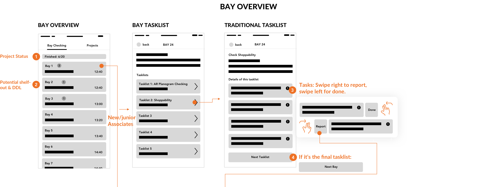
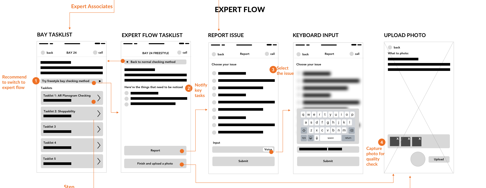
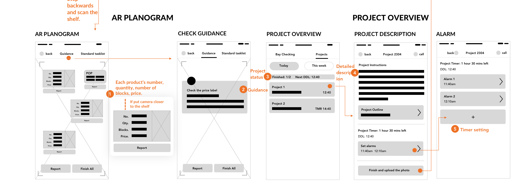
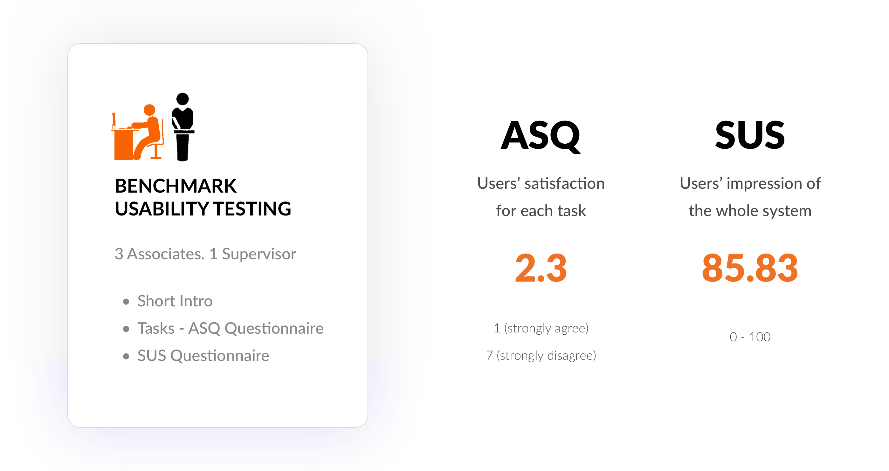

Overview.
| Role | UX Designer. UX Researcher |
| with Taylor Stillman. Fred Liu. Yannu Li | |
| Duration | Aug 2018 - Dec 2018 |
| Tag | AR. Customization. |
| Tool | Sketch. Principle. InVision. Framer. |
What's the problem we try to solve?
Our goal is to improve the efficiency and delight of associate tasking workflow.
Design outcome.
Process summary.
Delve into the problem.
Competitive analysis.
As our goal is to improve the efficiency of workflow, we studied current task management platforms that help teams complete tasks more efficiently and retail technologies that are on the market. Key takeaways for project management platforms are:
Pros
Clear status of what the project is going on.
Cons
Most platforms are not free; high learning curve; allocating projects cost a lot of efforts.

Research overview.
Affinity mapping.
After the three stages of research - stakeholder interview, observation, and contextual inquiry, we used spreadsheets and affinity mapping to summarize our results. The main takeaways including:

Jobs to do done (JTBD).
After another round of expert interview, we confirmed that the pain points we summarized from the affinity mapping were aligned with The Home Depot's business goal. So we started to analyze our target users using JTBD:
The main difference between JTBD and journey map is that JTBD thinks about desired outcomes at this stage so that we could keep in mind goals for the whole process.
Empathy map.
In order to provide more empathy to users and also identify potential accessibility issues, we analyzed the following empathy map:
Success criteria.
Finally, we summarized the following success criteria we would like to focus on to guide the next stage of design:

Iterations.
Brainstorming
First, we used mindmap for our divergent brainstorming session.
Next, we created a creativity/feasibility chart to evaluate each idea's feasibility and creativity. For the convergent brainstorming session, we dismissed ideas with low feasibility and low creativity, and categorized other ideas to three concepts.
Three concepts.
Concept feedback.
Based on the feedback session for 2 associates and 1 supervisor, we identified some features they extremely like and also some features with potential issues. We iterated the design concept.

Wireframe.
After iterating concepts, we drew the wireframe to finalize the functions and interactions:
  Final design.
Principles.
When deciding the visual style of the app, we kept in mind that it should follow The Home Depot's branding and visual principles. Clear hierarchy and simplicity is needed. The app should follow material design guideline and color usage should be '60% of white, with the primary color indicating the most important information'.

Bay overview.

Expert flow.


AR Planogram.

Bay tasks.

Project overview.

Evaluation.
Heuristic evaluation.
We conducted heuristic evaluation with designers and PMs in The Home Depot to make sure our design follows success criterias that we brought up before - like flexibility, dynamic information, communication...
For 6 experts we interviewd, they expressed praises of our product. Especially for efficiency of use and asthetic and minimalism design, they all gave the highest score.
Benchmark usability testing.
We conducted task-based benchmark usability testing to evaluate users' satisfaction and identify real-world-use usability issues. Participants filled out ASQ questionnaire after each task and SUS questionnaire after all tasks:
Design iteration: User guidance.
“Users wondering what they should do and what this page is about?”
Design iteration: Accessibility
“I cannot see the label very clear. I want to click it.“